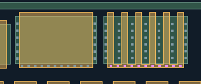
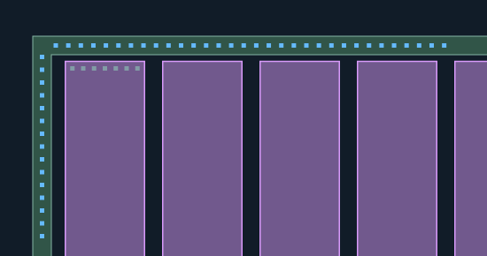

用户已批准六管共栅端部相对位置，以及环顶部32／左侧15孔的本次复核范围。人审记录 · 锁定基准。本页保留验收时图稿。
W1宽MOS、E1电阻上端已获认可，灰蓝表示未改动CT。紫色为六管共栅孔的局部位置修订，蓝色为环补查候选。 栅指数量、共栅关系和原图观察不变；没有用设计规则生成无证据孔。
源图与规则图是独立坐标视图，可切换对照，不是像素级投影。环仅检查左上可见子段， 未声明全环覆盖。几何检查使用相对像素预算，不等于真实PDK DRC；M1及网络仍未知。
宽MOS保持已审结果。只核对六管共栅端部是否与宽MOS相对位置合理；六栅指与共栅关系不变。

只核对环左上子段新补查孔列；内部电阻7孔保持已审结果。横向32、竖向数量按实测峰输出，不宣称全环。
